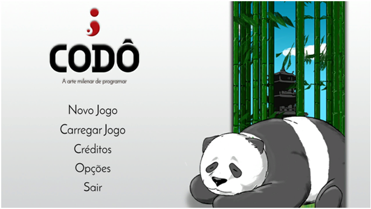

CODÔ, o dojo de programação

No curso de graduação em Sistemas e Mídias Digitais, da Universidade Federal do Ceará, cursando o terceiro semestre, minha equipe e eu decidimos (na disciplina de projeto integrado e tendo como cliente o professor Emanuel Coutinho), continuar nosso projeto de ensinar lógica de programação através do nosso jogo, o CODÔ. Inspirado no termo "coding dojo", ou dojo de codificação (programação), nosso aplicativo tem o objetivo de ensinar lógica de programação de uma maneira lúdica e atraente.
Para baixar acesse:
Blog da Magma